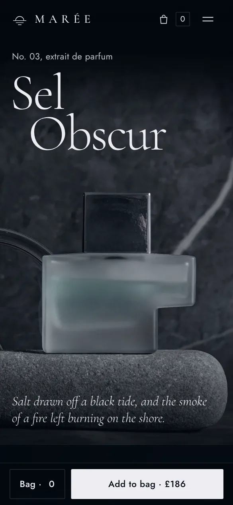

Marée
Eleven hours on skin, drawn as five tides, from a one-scent house in Saint-Malo.
Marée sells one mineral extrait, so the page behaves like the sea it comes from. Drag through a day on skin and each note rises over its own photograph as it leads. Pick a size and the bag says when it is filled and when it arrives.
This is the build itself, not a recording. Use it like a customer would, or press Show me in full screen and watch it work.

What it does for the owner
A luxury brand can feel expensive and still get the bottle into the bag in two taps.
A one-scent fragrance house in Saint-Malo. Most perfume sites sell with gold and adjectives. This one sells with the sea: real photographs of every note, a tide chart for a day on skin, and a bag that answers when it ships.
- The bottle and its price are on the first screen, so a visitor can buy without scrolling
- A tide chart turns the notes into something you can feel through a screen: drag through eleven hours and each one rises as it leads
- Three sizes and a bag that says when the bottle is filled and when it arrives, the two questions that stall a luxury order
- A sample in every box and 30-day returns sit beside the button, right where the doubt is
What comes with a site like this
- Built for your tradeDesigned from scratch around how your customers decide, like the fragrance house idea at the heart of Marée. No theme, no template.
- Quick on a phoneWritten by hand with nothing bought in, so it loads fast on a phone signal and works with a thumb.
- Found on Google and in AI answersTitles, descriptions, schema and an llms.txt set up page by page. How the search side works.
- Wired into the systemMissed calls get a text back, bookings land in the diary and reviews get asked for. See the system.
- Yours from day oneYour name, your numbers and your domain, owned by you. No platform holding it hostage.
- A fixed price firstA free 45-minute call, then a fixed price before anything is built.
Fragrance house is invented, so every person, number and review on it is fictional. Photographs from Pexels, graded and cropped for this page. Nobody pictured is presented as staff.